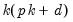
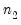
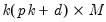
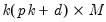
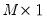
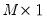
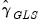
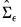
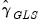
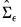

The basic  -variable VAR(p
-variable VAR(p) specification has  coefficients so that even moderate sized VARs require estimation of a large number of parameters. When VARs are applied to macroeconomic data with limited sample sizes, model over-parameterization is a frequent problem as there are too few observations to estimate precisely the VAR parameters.
Substituting Equation (44.14) into
Equation (44.5) produces an unrestricted regression specification
Select or type
var in the command window to display the estimation dialog.
The Basics tab of the VAR Specification dialog outlines the basic specification, and should be filled out as for a basic specification (
“Estimating a VAR in EViews”).
Click on the VAR Restrictions tab to specify your restrictions:
The section on the left should be used to select the VAR elements that you wish to restrict. You may click on the entries for the lag matrices (, , , ) and the vectors of coefficients associated with each exogenous variable () to select an element to restrict. The right side of the dialog will change to show the current settings for the selected element.
Note that in this syntax, the canonical names (“L#”, “E#”, “E(X)”) that refer to lag matrices and exogenous variable vectors are preceded by “@” to avoid ambiguity.
@vec(W)=  , ,  , ...
|
Restricts all elements of matrix W similar to a pattern matrix. Element ordering matches the vectorization of the matrix, i.e., the elements of the first column, followed by the second column, followed by the third column, etc.
|
|
|
Restricts W to be a diagonal matrix, i.e., off-diagonal elements are zero. The diagonal elements are unrestricted.
|
|
|
Restricts W to be a diagonal matrix with elements on the diagonal restricted to be n.
|
|
|
Restricts W to be a lower triangular matrix, i.e., elements above the diagonal are zero.
|
|
|
Restricts W to be a unit lower triangular matrix, i.e., elements above the diagonal are zero and elements on the diagonal are one.
|
|
|
Restricts W to be an upper triangular matrix, i.e., elements below the diagonal are zero.
|
|
|
Restricts W to be a unit upper triangular matrix, i.e., elements below the diagonal are zero and elements on the diagonal are one.
|
|
|
|
|
|
|
When restrictions have been applied, the tab of the dialog will change to offer additional options. In the newly displayed in the bottom left o the dialog, you will be prompted to specify the method of estimating your restricted coefficients:
In you do not select the option, EViews will estimate the parameters of the model using one-step GLS estimation. If you do select to specify the iteration and convergence properties of the estimation. To estimate with OLS, you may select and specify a of 0.


to zero (“Estimating a VAR in EViews”). In contrast, the more general methods described in this section permit finely targeted restriction on the parameters, allowing us to incorporate a priori information about the parameters of the model which does not fit into the lag exclusion framework.
is a reference to a canonical matrix name (e.g., “L1”, “L3”).
If restrictions have been applied to any elements, the left side of the dialog will note this fact with the line of text “* restrictions applied”, and the Clear All button will be enabled. The button allows you to easily remove all of the current restrictions.When restrictions have been applied, the Basics tab of the dialog will change to offer additional options. In the newly displayed Restriction estimation section in the bottom left o the dialog, you will be prompted to specify the method of estimating your restricted coefficients:In you do not select the Iterate GLS weighting option, EViews will estimate the parameters of the model using one-step GLS estimation. If you do select Iterate GLS weighting you will be prompted to specify the iteration and convergence properties of the estimation. To estimate with OLS, you may select Iterate GLS weighting and specify a Max Iterations of 0.Following estimation, EViews will display the results of restricted estimation. For the most part, the results are as described in “Estimation Output”, but there are some differences of note. .
. is a  restriction matrix,
is a  restriction matrix,  is a  vector of unconstrained parameters and
is a  vector of unconstrained parameters and  is a vector of known constants.
is a vector of known constants. is given by
is given by may be employed. By default, EViews will iterate over estimates of  and the  obtained using the current residuals until convergence, or the maximum number of iterations is reached. Alternately, you may elect to perform only a single GLS iteration.
may be employed. By default, EViews will iterate over estimates of  and the  obtained using the current residuals until convergence, or the maximum number of iterations is reached. Alternately, you may elect to perform only a single GLS iteration. are then
are then